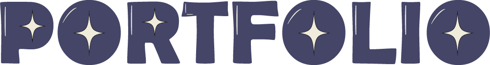
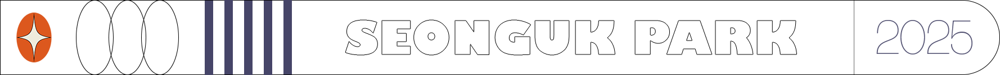
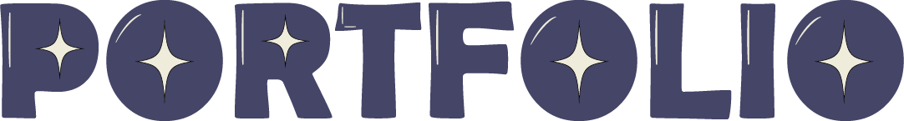
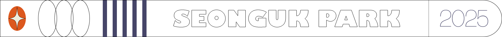
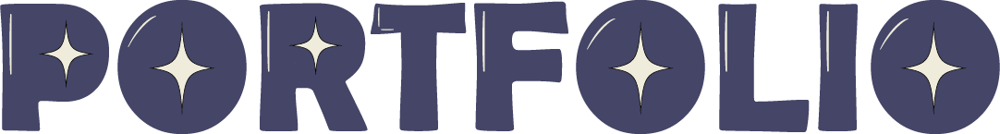
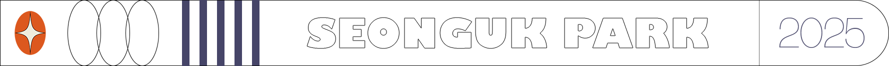
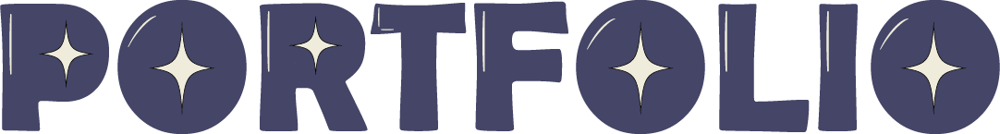
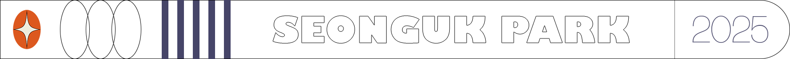

 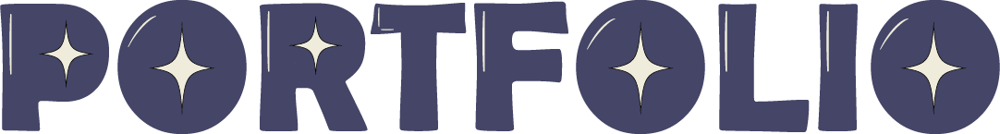
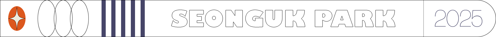
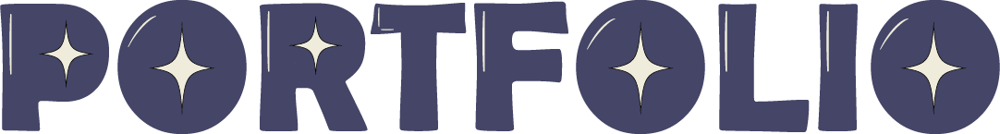
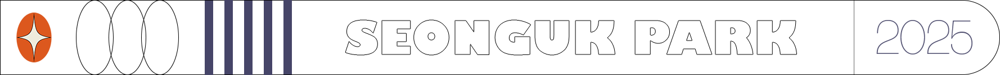


 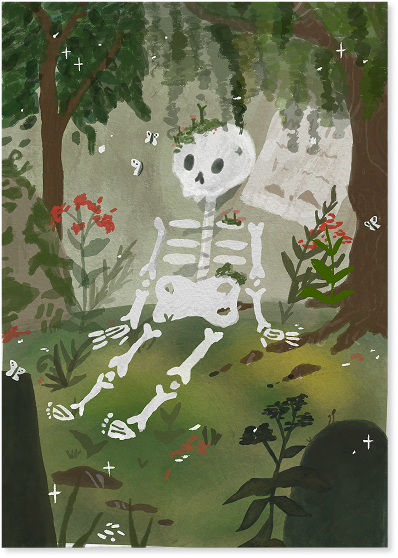
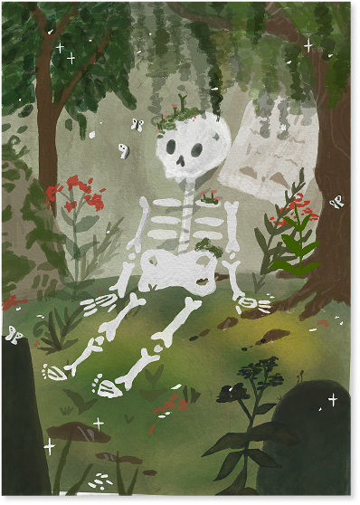

저는 디자인을 통해 사람들의 일상이 조금 더 따뜻하고, 귀엽고, 편안해지길 바랍니다.
단정한 구조 안에 배려와 감성, 그리고 작은 디테일까지도 사랑스럽게 담아내는 것을 좋아합니다.
사용자 중심의 시선으로 무엇이 불편한지 먼저 살피고,
웹, 브랜드, UI/UX 등 다양한 분야에서 조화롭고 감각적인 디자인 솔루션을 만들어갑니다.
디자인은 결국 사람을 위한 언어라고 믿기에, 저는 늘 더 듣고, 더 관찰하며,
보는 순간 기분 좋아지는 따뜻한 디자인을 계속해서 그려나가고 싶습니다.